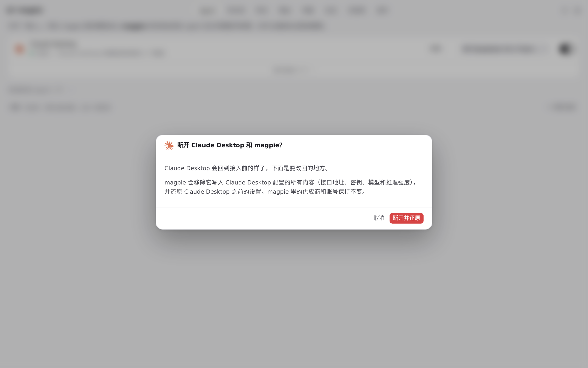
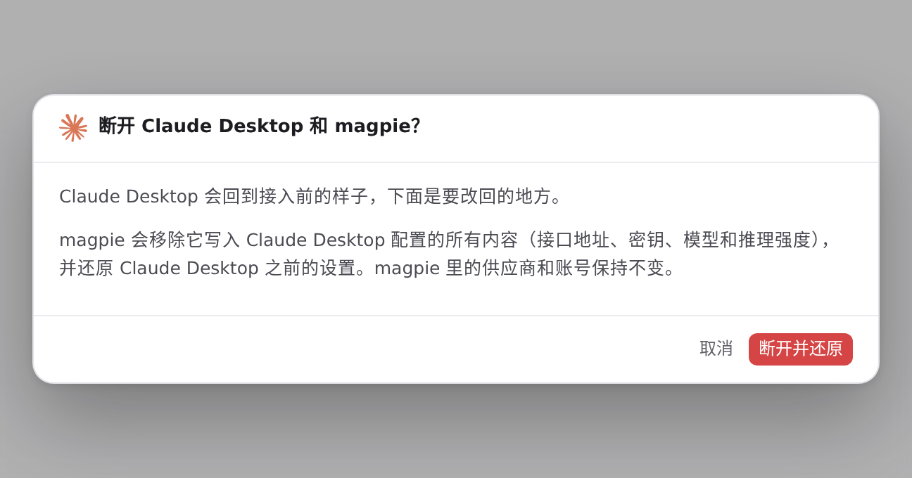

#735 界面预览
commit f6f4bb0 · 回到 PR · 改动只涉及「断开并还原」确认框的排版：配置文件预览（.ag-diff-wrap）和 Codex 的保留说明（.ag-note）改为跨满正文网格，正文行改为按内容高度排布，使预览不再落进编辑器的窄标签列，短窗口下也不会与下方说明重叠。
红线是鼠标走过的轨迹，红色圆环是一次点击；底部文字是这一步在做什么。空格暂停，← → 逐段查看。
断开确认框里的配置预览 · Agent 列表：Claude Desktop 已接入 magpie

断开确认框里的配置预览 · 断开确认框在窗口里的样子

断开确认框里的配置预览 · 确认框正文：配置文件预览与正文网格的关系
 断开确认框里的配置预览 · 断开确认框在窗口里的样子
断开确认框里的配置预览 · 断开确认框在窗口里的样子
 断开确认框里的配置预览 · 确认框正文：配置预览区域与正文网格的关系
断开确认框里的配置预览 · 确认框正文：配置预览区域与正文网格的关系
 断开确认框里的配置预览 · 预览区域悬停时的布局
断开确认框里的配置预览 · 预览区域悬停时的布局